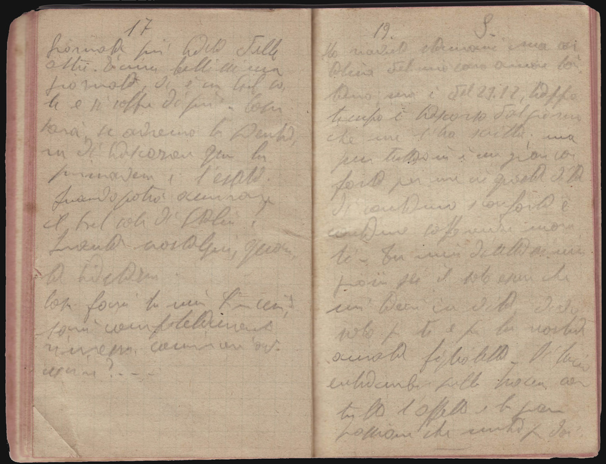

Cartoline
Raccolta di cartoline scritte da Giovanni Martinelli a Lina Masoni tra gli anni 1914 e il 1919.
Raccontano una storia d'amore d'altri tempi in cui lui, militare lontano da casa, corteggia l'amata con parole scritte di getto su cartoline.
1914
1919
1915
Varie
1916
Raccontano una storia d'amore d'altri tempi in cui lui, militare lontano da casa, corteggia l'amata con parole scritte di getto su cartoline.
Diario di prigionia
Un taccuino consumato su cui sono annotate, dal 27 gennaio al 31 marzo del 1918, le sofferenze e i tormenti patiti da Giovanni Martinelli durante la prigionia a Dunaszerdahely in Ungheria (ora Slovacchia).
Diario di prigionia

Diario di guerra
Il diario di guerra che racconta gli avvenimenti dal 15 al 22 novembre del 1917 ci restituisce uno spaccato inedito della Prima Guerra Mondiale.
Diario di guerra